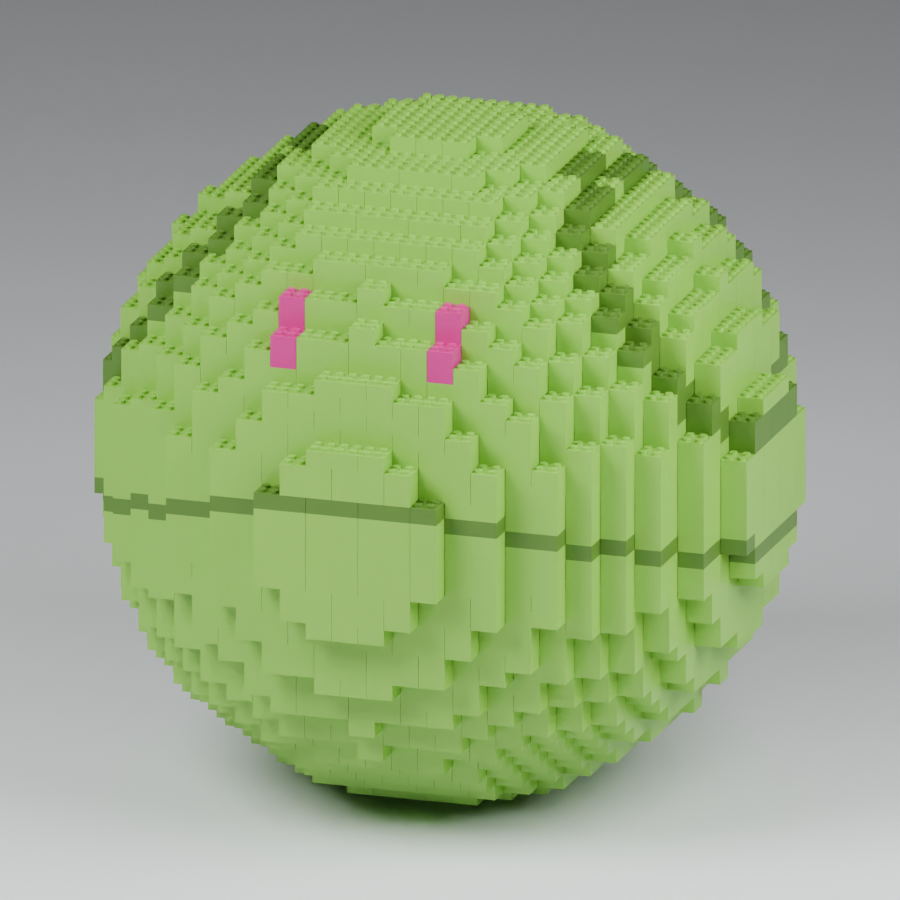
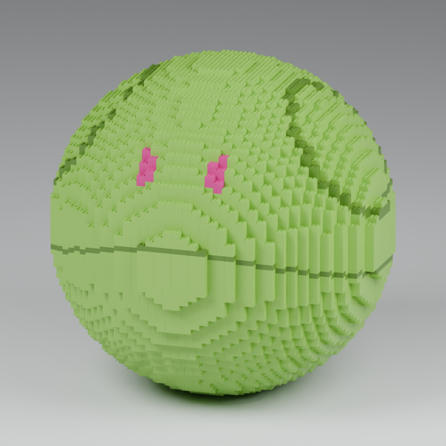
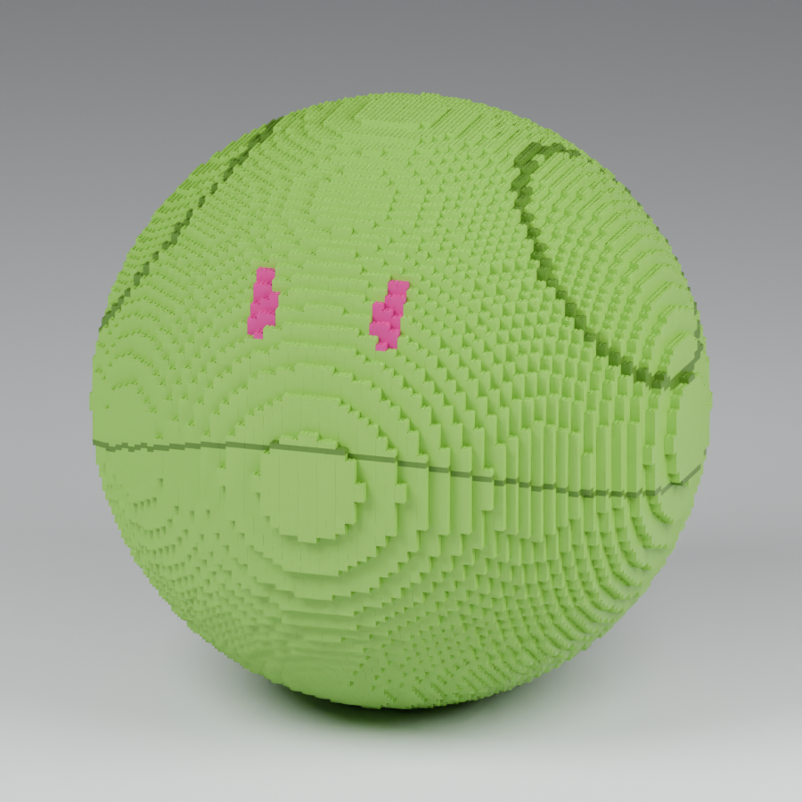
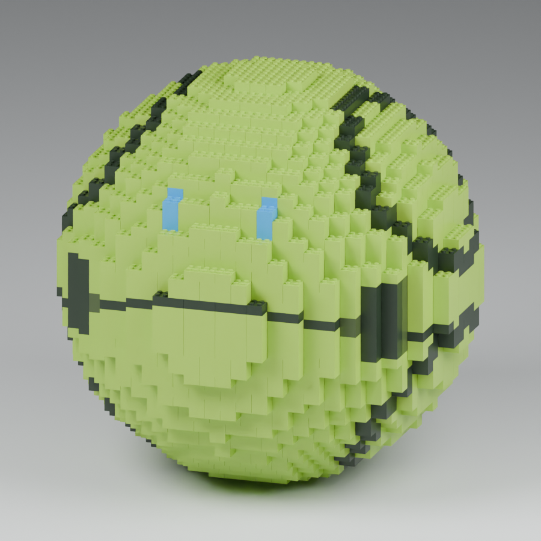
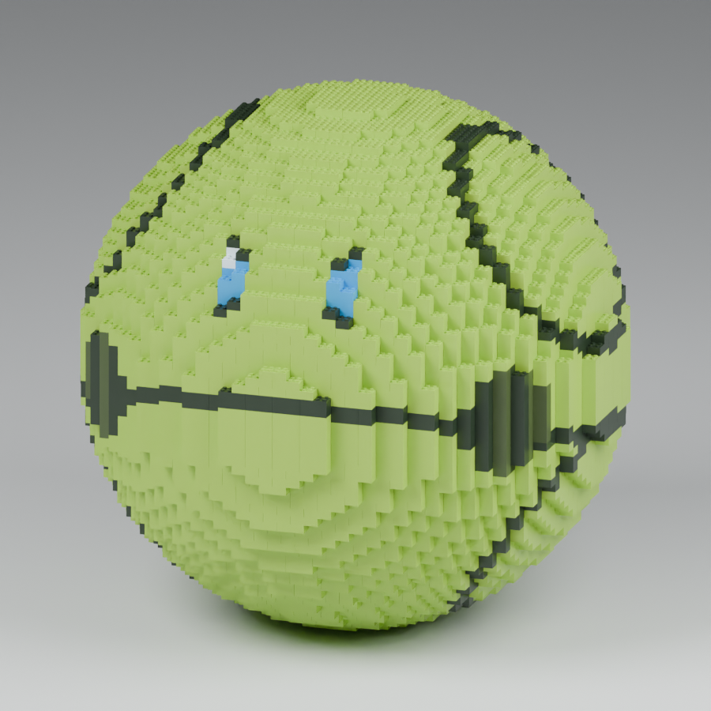
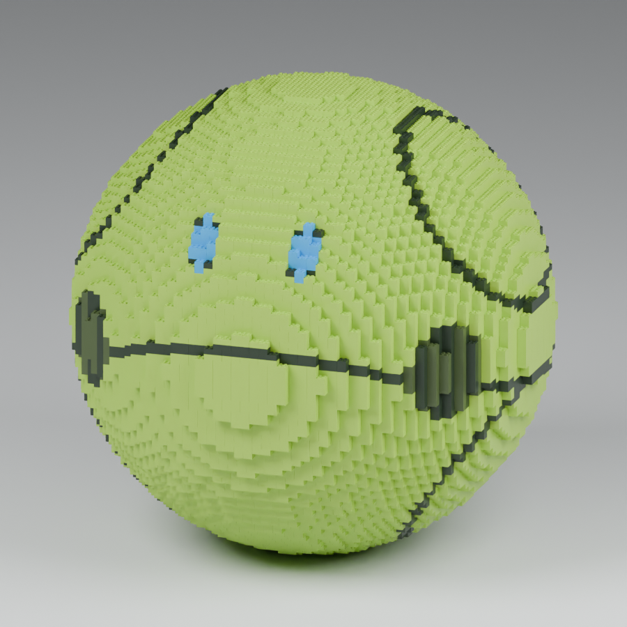
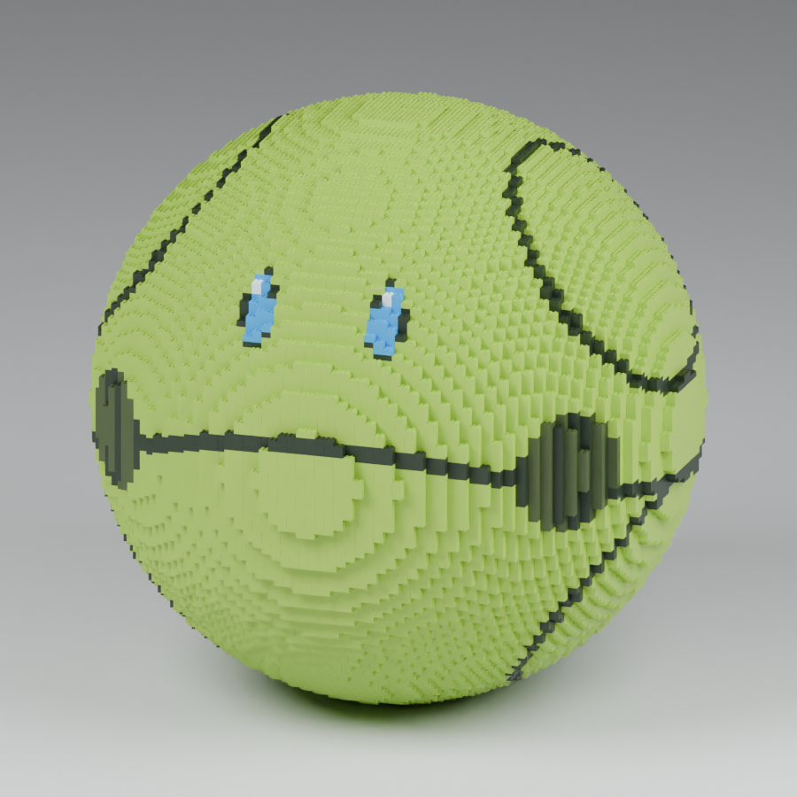
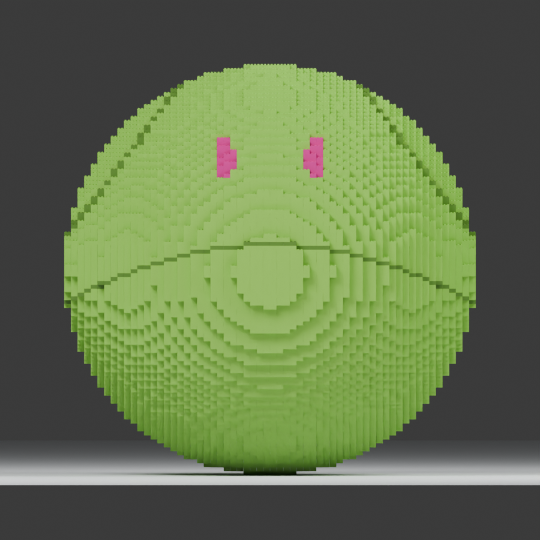
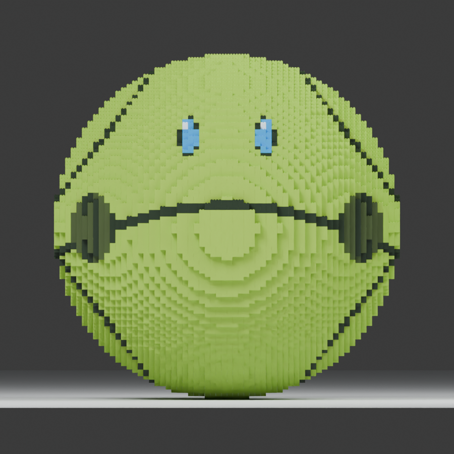

同じブロックで、ハロの大きさを比較
2種類の外観を40・60・80・100 cm級で比較する、非公式の外観研究です。各案の形状と配色は、実際のブロック配置から生成しています。
すべて8 mmピッチ・本体高9.6 mm、スタッド径4.8 mm・高さ1.8 mmの2×2／2×4ブロックです。小型ブロックへの置換や、完成模型全体の拡大縮小はしていません。
この8案の系列内では同じ外観比率を用いています。大きくなるほど部品数が増え、同じ表示サイズではブロックが細かく見えます。
表示倍率を揃えて輪郭を比較しています。大きい模型ほど画面内のブロックが細かく見えます。
ベーシック版


ディテール版（青い目）




外観確認用・印刷用の完成設計ではありません
仮配置の外形表示です。下面の空洞・嵌合、強度、支持、組立順、印刷は未検証です。部品数は外殻と内部リブを含み、台座・ヒンジ・予備・試験片を含みません。製造設計は保留中です。
比較条件として外殻と内部リブの公称厚さは16 mmです。大型化したときの強度・支持・転倒・組立順は未検証です。重量や印刷時間は実スライスしていないため示しません。
仮配置の外形表示です。下面の空洞・嵌合、強度、支持、組立順、印刷は未検証です。部品数は外殻と内部リブを含み、台座・ヒンジ・予備・試験片を含みません。製造設計は保留中です。
比較条件として外殻と内部リブの公称厚さは16 mmです。大型化したときの強度・支持・転倒・組立順は未検証です。重量や印刷時間は実スライスしていないため示しません。
配置から計算した実寸と個数
| 外観 | サイズ区分 | 幅 × 奥行 × 高さ（スタッド込み） | 全体 | うち内部リブ |
|---|---|---|---|---|
| ベーシック版 | 40 cm級 | 399.8 × 399.8 × 405.0 mm | 2,476 | 720 |
| ベーシック版 | 60 cm級 | 607.8 × 607.8 × 606.6 mm | 5,703 | 1,684 |
| ベーシック版 | 80 cm級 | 799.8 × 799.8 × 798.6 mm | 10,124 | 2,996 |
| ベーシック版 | 100 cm級 | 991.8 × 991.8 × 990.6 mm | 15,733 | 4,692 |
| ディテール版（青い目） | 40 cm級 | 399.8 × 399.8 × 405.0 mm | 2,498 | 720 |
| ディテール版（青い目） | 60 cm級 | 607.8 × 607.8 × 606.6 mm | 5,753 | 1,684 |
| ディテール版（青い目） | 80 cm級 | 799.8 × 799.8 × 798.6 mm | 10,146 | 2,996 |
| ディテール版（青い目） | 100 cm級 | 991.8 × 991.8 × 990.6 mm | 15,869 | 4,692 |
60 cm級の外径目標は608 mm、100 cm級は992 mmです。格子に合わせた区分で、60.00／100.00 cmちょうどではありません。
100 cm級を正面から見る


原参考画像は再配布していません。掲載画像は、この研究の配置データから生成したCGです。
非公式の個人制作研究です。作品・キャラクター・商標の権利者との提携や推奨、製品互換性、玩具認証を示すものではありません。 権利・非公式作品について